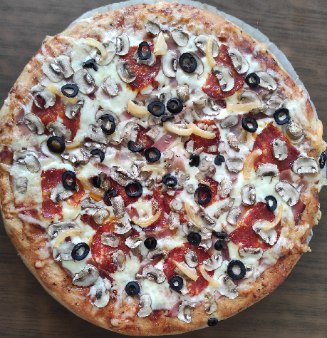

Pizza recipe

Description
Home pizza recipe with freshly made dough
Ingredients
- White flour
- Whole wheat flour
- Oat flour
- Yeast
- Water
- Sunflower oil
- Salt
- Ketchup
- Oregano
- Basil
- Smoked sirloin steak
- Cheese 40% fat
- Kulen sausage
- Fresh paprika
- Mushrooms
- Black olives
Steps
- Mix 70% of white flower with 30% of whole wheat/oat flower
- Add water, oil, salt, yeast
- Knead the dough with your hands until its no longer sticky.
- Leave the dough for 30 min to rest and shape it to your preferred pan size
- Add ketchup, oregano, basil
- Arrange smoked sirloin steak until everything is covered
- Follow up with shredded cheese
- Put slices of kulen sausage on top of cheese
- Sprinkle pizza with sliced fresh paprika, mushrooms and black olives
- Bake at preheated oven on 235°C for 10 min or until crust forms light brown color